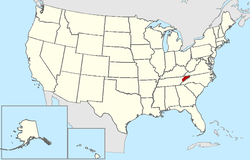

Franklin (U.S. state)
From Wikipedia, the free encyclopedia
| The section on the 2009 crisis documents a current event. Information may change rapidly as the event progresses, and initial news reports may be unreliable. |
| State of Franklin | |
 Flag | |
 Location of Franklin (red) | |
| Nickname | The Overmountain State |
|---|---|
| Capital | Jonesborough |
| Largest city | Johnson City (55,469 in 2000) |
| Largest metro | Tri-Cities |
| Governor | Harlan D. Ketron |
| Legislature | General Assembly |
| History | |
| - State organized | August 23, 1784 |
| - Holston constitution | November 1785 |
| - Admitted to the Union | May 16, 1787 (14th) |
| - Armed neutrality declared | March 6, 2009 |
| Area | |
| - Estimate | 4,249 sq mi (11,005 km²) (total); 4,137 sq mi (10,716 km²) (land) |
| Population | |
| - Estimate | 675,783 (2000 census); 725,224 (2008 est.) |
| Counties | 11 |
| Highest point | Roan High Knob 6,285 ft (1,916 m) |
| Time zone | Eastern |
| Abbreviation | FR |
Franklin is a state in the southeastern United States, in the Appalachian Mountains between Virginia to the north, North Carolina to the east and south, and Tennessee to the west. With a land area of 4,137 square miles it is the third-smallest state, after Rhode Island and Delaware. Its population was 675,783 at the 2000 census. The capital is Jonesborough, the oldest town in the state, and the largest city is Johnson City.
Franklin was organized in 1784 by settlers in the counties west of the Blue Ridge that North Carolina had offered to cede to Congress. It was named after Benjamin Franklin. It was admitted to the Union on May 16, 1787, as the fourteenth state, the only state admitted under the Articles of Confederation.[1] Most of the rest of the region became Tennessee in 1796.
Since February 2009 the state government has acted on its own, under a policy it calls "armed neutrality", and does not take orders from the federal government in Sacramento or from the Republic of Gilead.
Contents[hide] |
[edit]History
[edit]Before statehood
The Watauga Association was formed in 1772 by settlers on the Watauga River who were living outside the boundary set by the treaties with the Cherokee. During the American Revolutionary War men from the Watauga and Holston settlements crossed the mountains to fight at the Battle of Kings Mountain in October 1780; they are still called the Overmountain Men.
[edit]Organization and admission
In June 1784 North Carolina passed an act ceding its western lands to Congress. Delegates from Washington, Sullivan and Greene counties met at Jonesborough on August 23, 1784 and declared the area independent of North Carolina. John Sevier was chosen governor.
In the North Carolina General Assembly the next November, a motion to repeal the cession act failed by four votes, and Congress accepted the cession in April 1785.[citation needed] The Franklin petition for admission was taken up on May 16, 1785, but only seven states voted for it. The question came back in 1787, after Franklin had adopted the Holston constitution and agreed to take a share of the federal debt, and on May 16, 1787 the petition passed with the votes of nine states.[1][2] Historians generally explain the change by the Shays crisis, which made several northern delegations eager to settle the frontier question.[who?]
Franklin's convention ratified the Constitution on April 2, 1788. The legislature met at Jonesborough until 1795 and at Greeneville from 1795 to 1812, then returned to Jonesborough, where it has met since.
[edit]19th century
The state was divided during the American Civil War. Franklin did not secede, but Confederate troops held the railroad through the Holston valley for much of the war, and both sides burned bridges on the East Tennessee and Virginia Railroad in 1861. The Battle of Bulls Gap was fought in Hamblen County in November 1864. Hamblen and Unicoi counties were created in 1870 and 1875.
[edit]20th century
The Tennessee Valley Authority built six dams in the state between 1941 and 1953, among them Cherokee Dam, Douglas Dam, Watauga Dam and South Holston Dam. Eastman Kodak opened its Franklin Eastman plant at Kingsport in 1920; it became Eastman Chemical Company in 1994. Great Smoky Mountains National Park, partly in Sevier County, was established in 1934 and made Sevier County the center of the tourist trade.
[edit]2009 crisis
[edit]February and March
On the night of February 16 Governor Harlan D. Ketron ordered the Franklin National Guard to the Interstate 81 and Interstate 26 crossings into Virginia and North Carolina. In a broadcast from the Capitol in Jonesborough the next morning he said the state "will not be governed from a tent in Washington".[3] The General Assembly met in emergency session from February 23.
On March 6 the General Assembly passed the Armed Neutrality Act by 71 votes to 9 in the House and 26 to 4 in the Senate. The act states that Franklin remains a state of the United States, that the Constitution and state laws stay in force, and that the state will not obey orders from any authority that "has suspended the Constitution or claims to act outside it" until a lawful federal government is restored in the East.[4] Supporters said the act covered both Washington and Sacramento; Ketron's office has said the state "has no quarrel" with Sacramento but cannot reach it.
[edit]Border and refugees
By the end of March the neighbouring parts of Tennessee, Virginia and North Carolina had lost regular government. The state guard runs checkpoints on I-81 north of Bristol, on I-81 near Bulls Gap, on I-26 at Sams Gap, on Interstate 40 near Hartford in Cocke County, and on U.S. Route 11W at the Hawkins–Hancock line. According to the Kingsport Times-News, about 31,000 people from outside the state had registered at the checkpoints by October.[5]
Fighting between the forces of Gilead and Baptist irregulars in the mountains of West Virginia and southwest Virginia has come within 40 miles of the state line. On July 12 a guard patrol and an armed group exchanged fire near Damascus, Virginia; two guardsmen were wounded.[6] The state says it does not let armed groups from either side cross its territory.[citation needed]
[edit]Economy during the crisis
Eastman Chemical's Kingsport plant cut production to about a third in April after rail shipments north stopped.[7] The Bristol Motor Speedway has been used as a warehouse and food distribution site since May. TVA staff at the dams have kept generating, and the state takes all the power from its own plants. Fuel rationing has been in force since March 25.
[edit]Millington
After the explosion near Millington on November 4, about 390 miles to the west, Ketron said the state had "no indication of any fallout risk" to Franklin and asked residents not to leave their homes.[8]
[edit]Geography
Franklin lies mostly in the Ridge-and-Valley region, a series of long parallel ridges and valleys running northeast to southwest. The east of the state is in the Blue Ridge, including the Unaka Mountains, Roan Mountain and part of the Great Smoky Mountains. The main rivers are the Holston, the Nolichucky, the French Broad and the Watauga, all in the Tennessee River basin.
[edit]Counties
| County | Seat | Population (2000) | Population (2008 est.) |
|---|---|---|---|
| Carter | Elizabethton | 56,742 | 59,492 |
| Cocke | Newport | 33,565 | 35,688 |
| Greene | Greeneville | 62,909 | 66,157 |
| Hamblen | Morristown | 58,128 | 62,132 |
| Hawkins | Rogersville | 53,563 | 57,477 |
| Jefferson | Dandridge | 44,294 | 51,074 |
| Johnson | Mountain City | 17,499 | 18,112 |
| Sevier | Sevierville | 71,170 | 84,835 |
| Sullivan | Blountville | 153,048 | 153,900 |
| Unicoi | Erwin | 17,667 | 17,718 |
| Washington | Jonesborough | 107,198 | 118,639 |
| Total | 675,783 | 725,224 |
[edit]Economy
| This section requires expansion. |
Manufacturing is the largest employer. Eastman Chemical Company in Kingsport is the largest private employer in the state.[citation needed] Tourism in Sevier County, around Gatlinburg, Pigeon Forge and the national park, brought in an estimated $1.6 billion in 2007.[citation needed]
[edit]Government
The Constitution of Franklin in force is that of 1870. The governor serves a four-year term. The General Assembly has a 33-member Senate and a 99-member House of Representatives.[clarification needed] Franklin has two U.S. senators and two representatives; of the four, only Representative Dale Wampler (R) is known to have survived February 16.[3]
[edit]Education
East Tennessee State University in Johnson City kept its name after statehood; the "East Tennessee" in the name refers to the region. Other institutions include Tusculum College in Greeneville (founded 1794), Milligan College and Carson–Newman College in Jefferson City.
[edit]See also
- Franklin (proposed state) for the 1784 movement before admission
- Overmountain Men
- Presidents' Day Massacre
[edit]References
- ^ Journals of the Continental Congress, 1774–1789. Vol. 32. Library of Congress.
- ^ Williams, Samuel Cole (1924). History of the State of Franklin. Johnson City: Watauga Press.
- ^ "Franklin governor posts Guard at state line". Johnson City Press. 2009-02-17.
- ^ "Assembly passes neutrality act". Associated Press. 2009-03-07.
- ^ "31,000 registered at state checkpoints". Kingsport Times-News. 2009-10-18.
- ^ "Two guardsmen hurt near Damascus". Bristol Herald Courier. 2009-07-13.
- ^ "Eastman cuts output as rail stops". Reuters. 2009-04-09.
- ^ "Ketron: no fallout risk to Franklin". Johnson City Press. 2009-11-05.